프로젝트를 잘 마무리한 후 조금은 늦게 휴가를 다녀왔다
여행지는 방콕으로 처음가는 장소라 기대감을 가지고 공항에 도착했다.
생각보다 여유있게 도착해서 스타벅스에서 커피를 마시며 기달렸다.
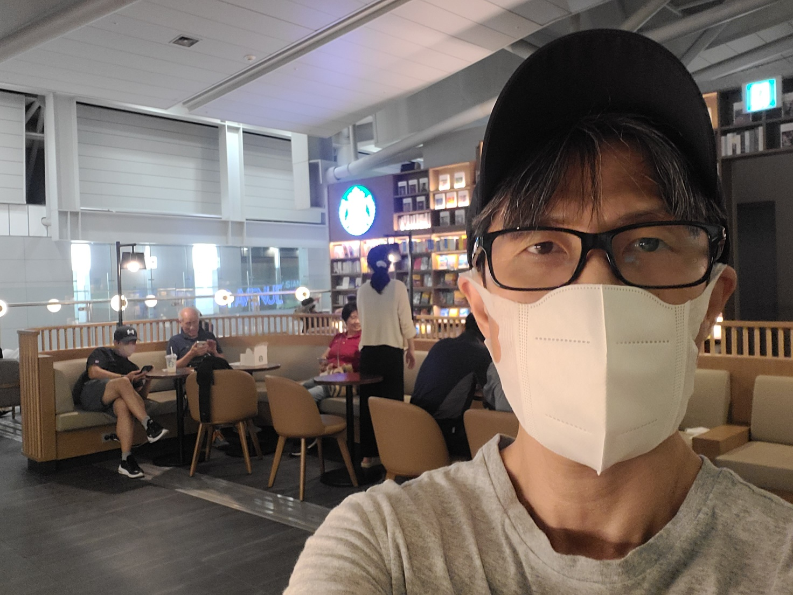공항의 야경은 처음 보는데 활주로의 불빛과 멀리 도시의 조명이 어우러져 밤의 아름다움을 더욱 빛내고 있는 것 같다.
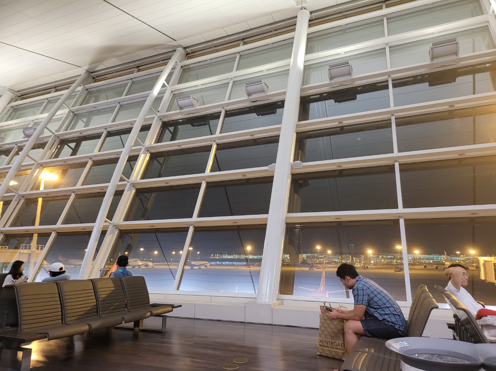밤 10시에 비행기 탑승을 하였는데 문제가 있는지 11시 넘어서 출발하여 다음날 4시 방콕 공항에 도착했다.
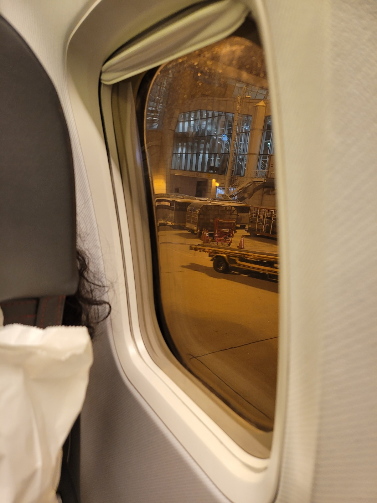너무 피곤한 상태에서 가이드 설명을 들어가며 숙소로 이동하였는데 꽤 괜찮은 호텔인 듯 하였다.
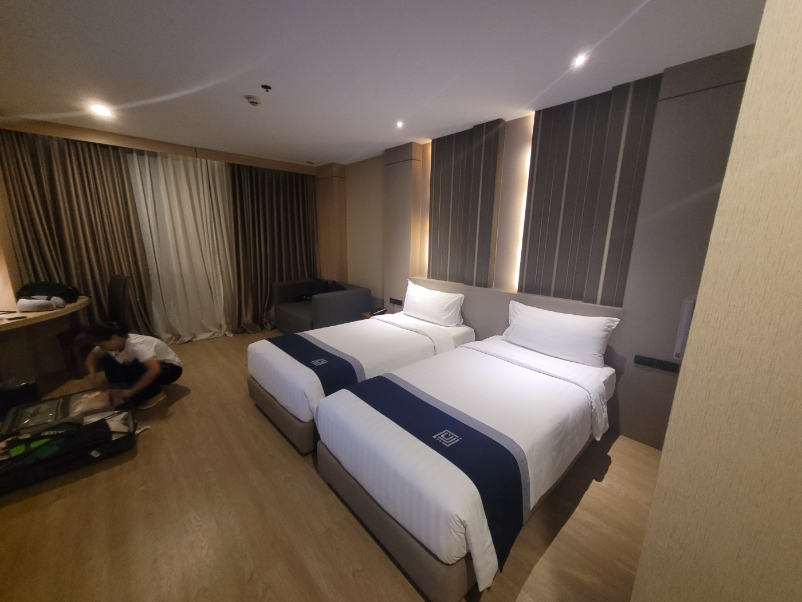1일차 방콕에서 유명한 사찰이라는 곳에 방문하였는데 규모가 굉장히 크고 우리나라하고는 차이가 있는 디자인이였다.
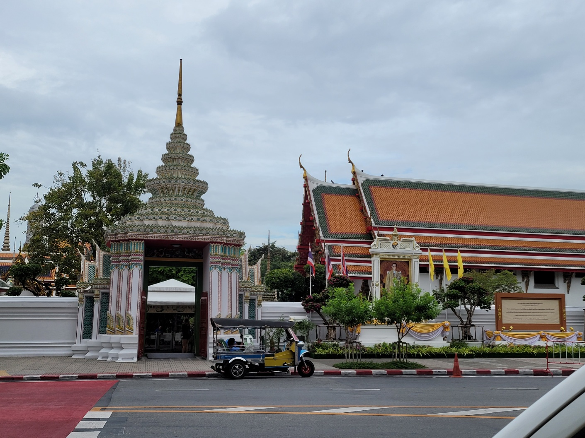세상에서 가장 긴 부처상이라는데 누워있는 자세에서 황금빛을 발산하는 모습이 앞도적이였다.
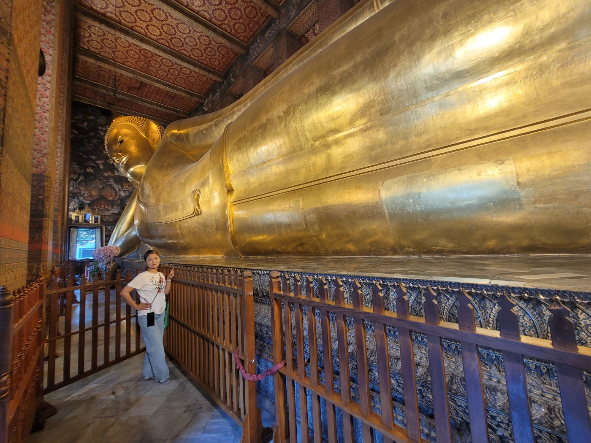2일차 커피를 마시면서 야외 공연을 볼 수 있는 장소에 왔는데, 따뜻한 날씨에 시원한 차 한잔하면서
동물과 가깝게 마주할 수 있고 또한 공연도 이색적으로 구성되어 있어 즐거운 시간을 보냈다.
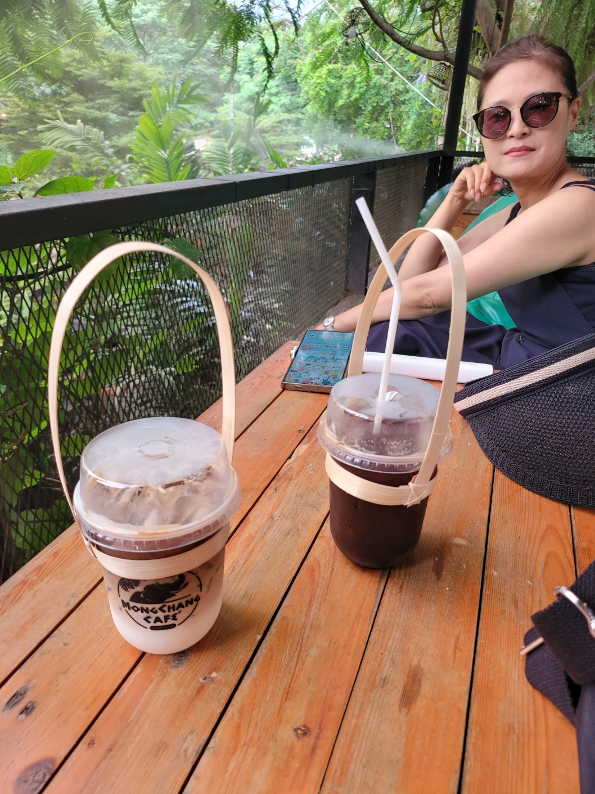그 다음으로 소원을 빌면 이루어진다는 장소인데 이름이 잘... ㅡ_ㅡ;;
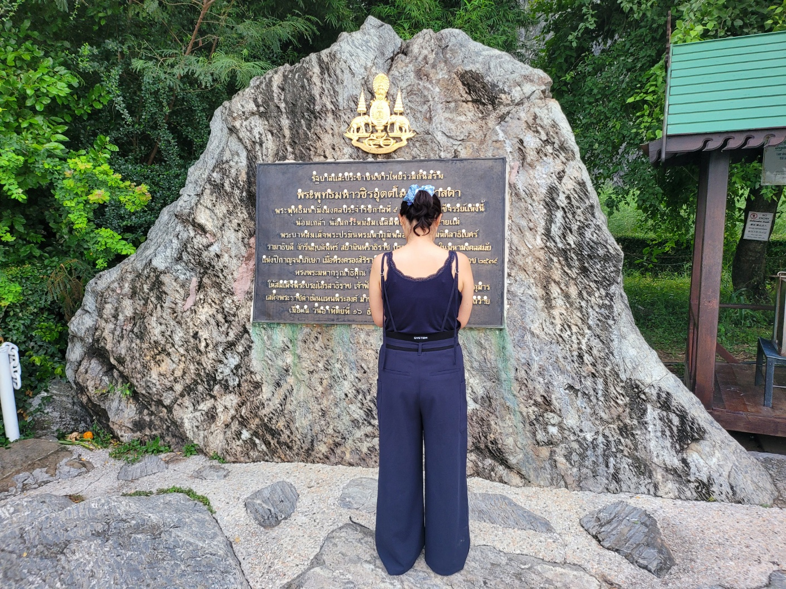저녁식사로 야외에서 라이브 음악을 들으면서 식사할 수 있는 고급 레스토랑이라는데 분위기 및 맛은 있었다.
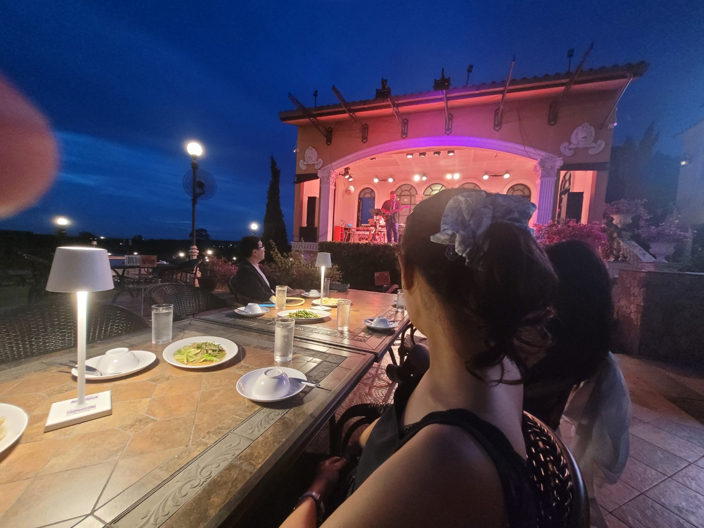3일차 점심때 가이드분이 자주가는 로컬 맛집으로 쌀국수집이 있다고하여 가봤는데 손님들은 적당히 있었고 생각보다 깨끗한 편이였다.
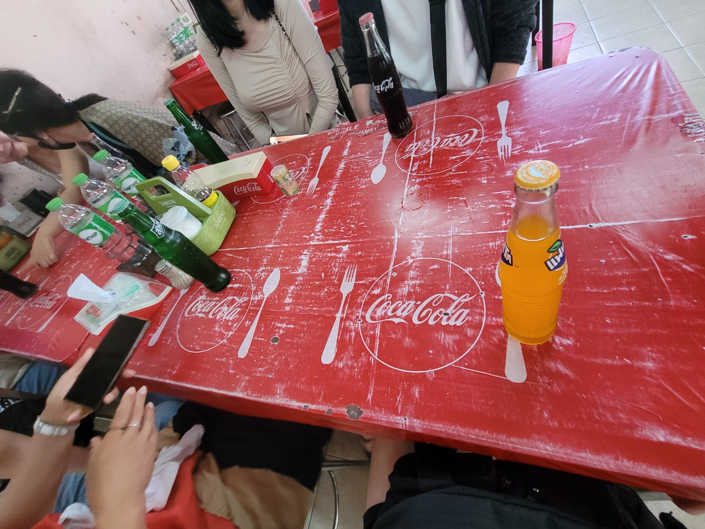여기 한그릇 양은 현지인들 기준으로 나와서 한국인들 기준으로 적을 수 있어 2인분을 시켜서 먹었는데 약간 많은 듯 하였다.
고기의 질은 좀 질겼는데 한국 하남의 스타필드 지하에 있는 쌀국수집이 더 좋은 듯 하다.
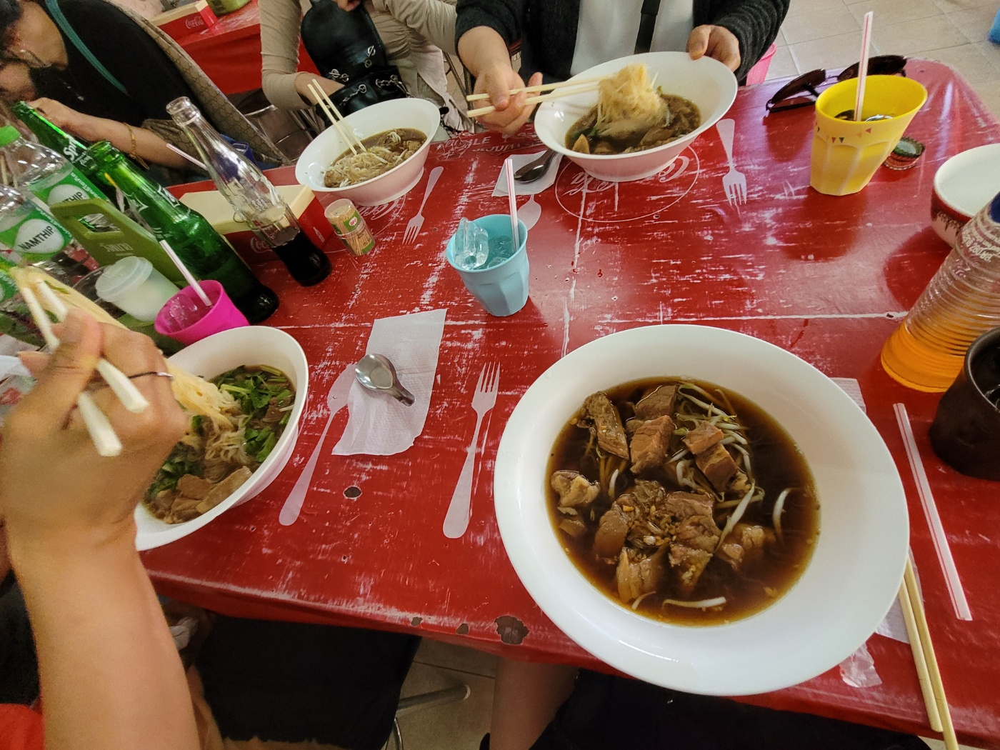식사 후 방콕에서 가장 큰 호수가 있는데 배에서 식사를 하면서 라이브노래를 들을 수 있는 곳이였다.
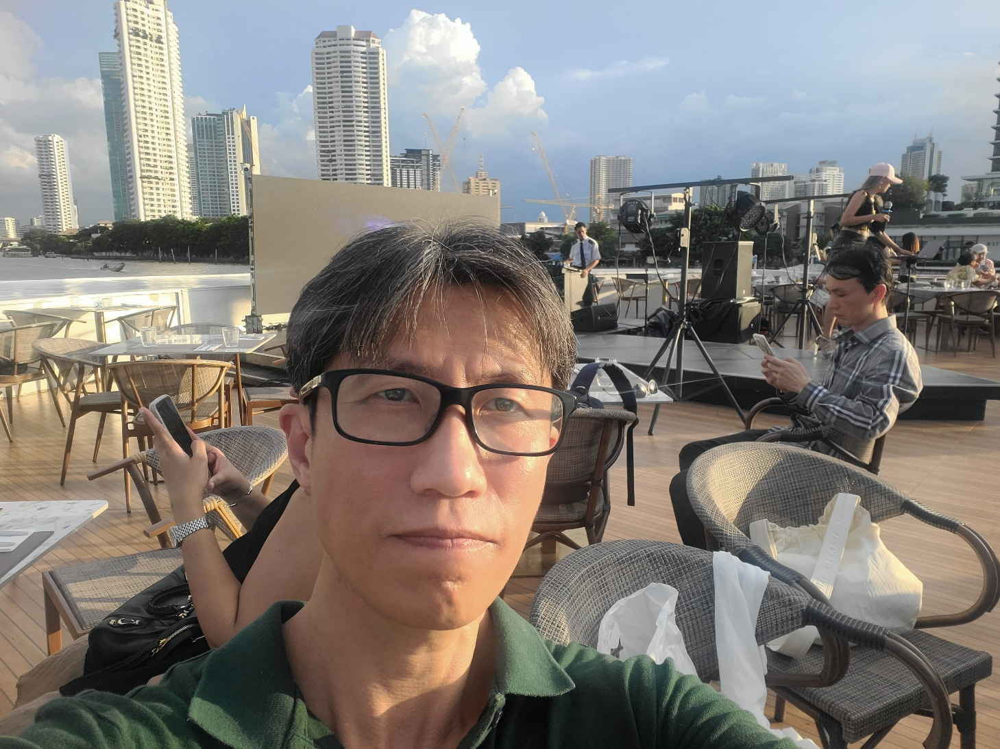지금까지 해외여행을 다니면서 디너 크루즈는 처음 접했는데 가장 좋은 기억으로 남을 것 같다.